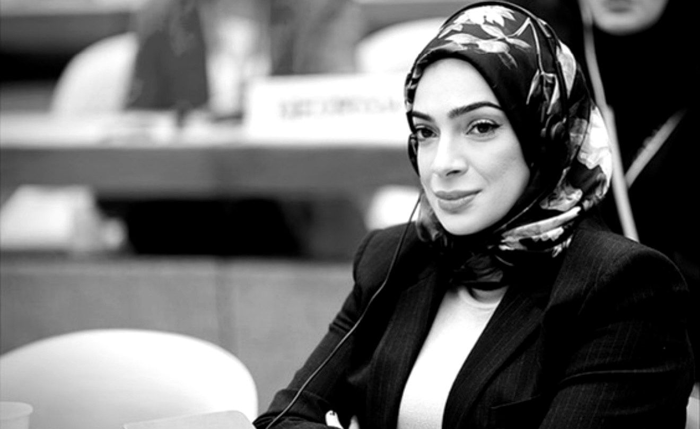

Profile
A career spent on
four sides of the
same table

Lubna Qassim is an international lawyer, senior policy leader and former senior diplomat whose twenty-six year career has spanned government, international law, institutional leadership, financial services and multilateral diplomacy.
She has worked at the intersection of public policy, global affairs and institutional transformation, with extensive experience in initiatives relating to health, humanitarian affairs, human rights, women and girls, education, climate and sustainable development. She brings a distinctive combination of senior government experience, international diplomacy, executive leadership and global institutional relationships, with a strong understanding of how to translate strategic priorities into partnerships, programmes and sustainable impact.
The lawyer, and then the legislator
Ms Qassim began her career with Clifford Chance in London and Dubai, advising governments, multinational corporations and financial institutions on international arbitration, corporate finance, governance and complex cross-border matters.
She subsequently served as Director of Economic Legislation at the UAE Ministry of Economy, where she led the reform and passage of fourteen major economic laws — the first comprehensive modernisation of the UAE's federal economic legislation in twenty-six years. She later served as a Public Sector Reform Consultant to the World Bank, advising governments across the GCC on governance, institutional transformation and economic modernisation.
The executive
In the private sector, Ms Qassim served as Senior Executive Vice President, Group Chief General Counsel and Group Company Secretary of Emirates NBD. As its first female C-suite executive, she led a three-hundred-member team supporting three listed banks, twenty-two companies and eight international operations, with responsibility spanning governance, risk, regulatory frameworks, complex disputes and institutional transformation.
The diplomat
In 2018 she was appointed by Presidential Decree as Minister Plenipotentiary of the First Degree and Senior Legal Counsel to the UAE Minister of Foreign Affairs, advising on international law, treaty practice, state-to-state disputes before international courts and tribunals, foreign policy and multilateral engagement.
From 2019 to 2024 she served as the UAE's Deputy Permanent Representative and Chargé d'Affaires to the United Nations and International Organizations in Geneva, representing the UAE across more than forty international organisations. Her responsibilities included engagement on global health, humanitarian affairs, human rights, women and girls, education, peacebuilding and climate. She worked closely with the leadership of WHO, OHCHR, ITU, UNCTAD, WMO, ILO and the ICRC.
She led the UAE's successful campaign for election to the United Nations Human Rights Council, and the UAE's campaign for the Presidency of the World Meteorological Organization — building coalitions and advancing UAE priorities across the international system.
Her particular value lies in connecting national and philanthropic ambition with the wider international ecosystem: engaging senior government and institutional stakeholders, building trusted global partnerships, strengthening governance and strategy, and helping translate vision into initiatives with international reach and enduring impact.
At a glance
- PresentDistinguished Fellow, UCLA Center for Middle East Development (CMED)
- PresentGovernor, Board of Governors, Helsinki Geoeconomics Society
- 2019 – 2024Deputy Permanent Representative and Chargé d'Affaires of the UAE to the United Nations and International Organizations, Geneva
- 2018Minister Plenipotentiary of the First Degree and Senior Legal Counsel to the UAE Minister of Foreign Affairs — appointed by Presidential Decree
- Senior Executive Vice President, Group Chief General Counsel and Group Company Secretary, Emirates NBD — first female C-suite executive
- Public Sector Reform Consultant, The World Bank
- Director of Economic Legislation, UAE Ministry of Economy
- Clifford Chance, London and Dubai